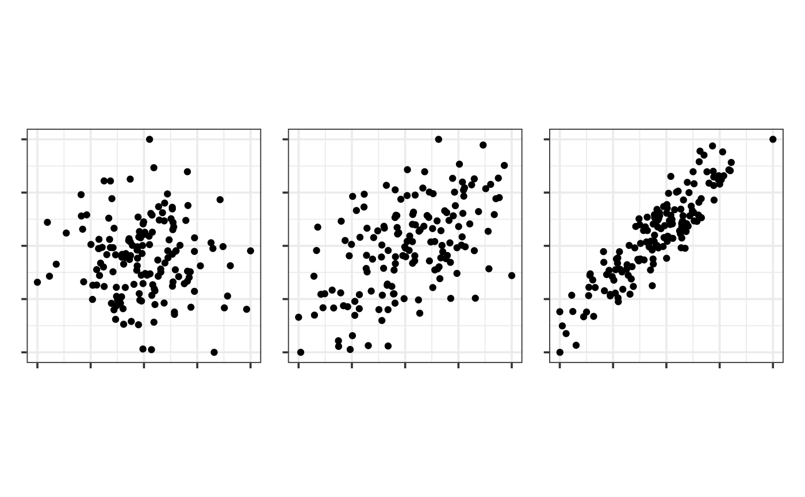
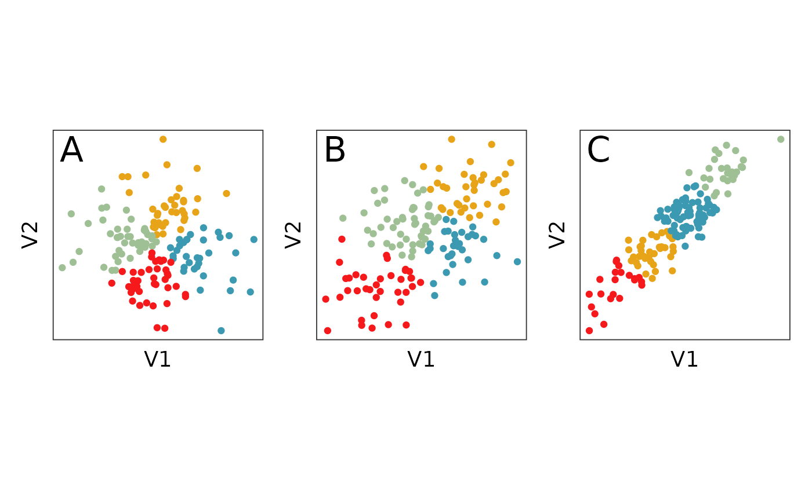
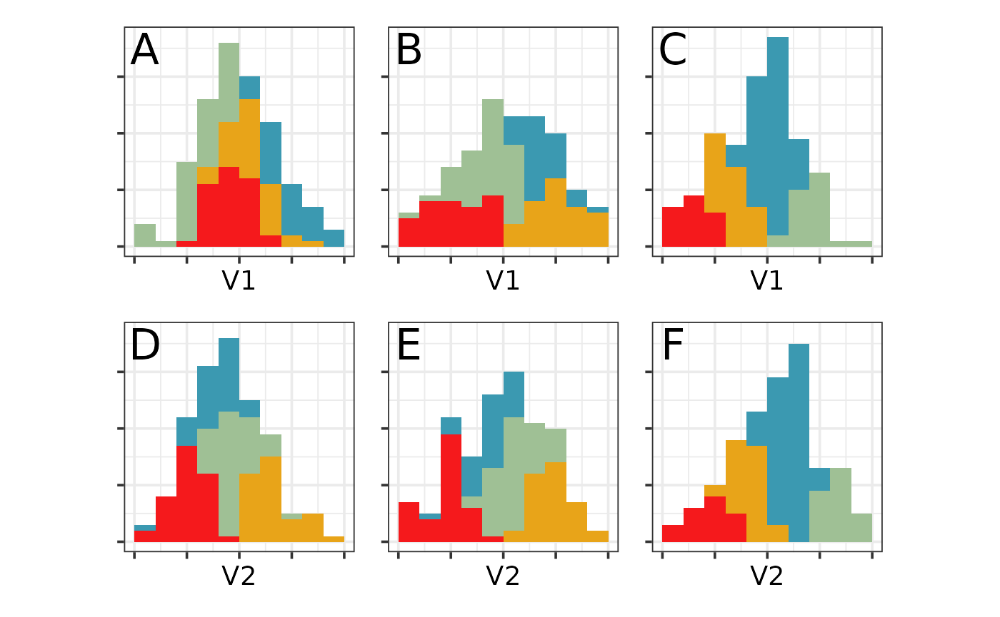
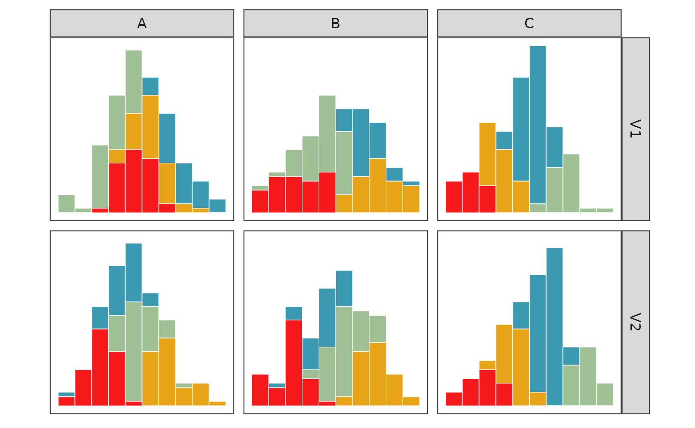
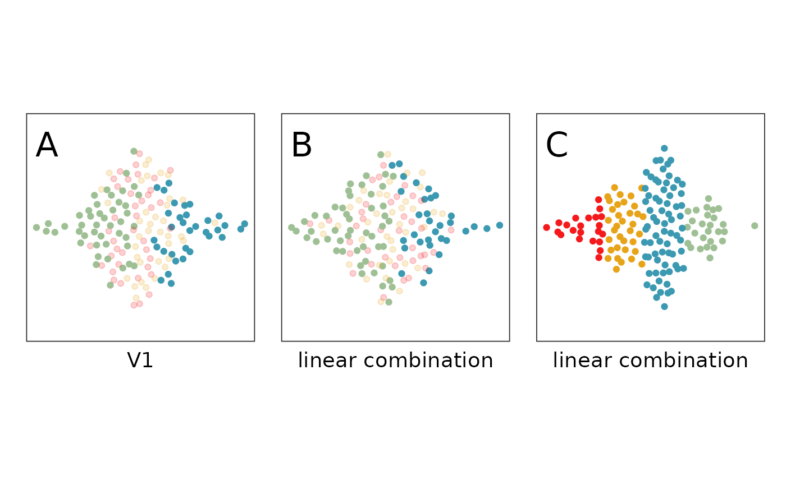

Market Segmentation
Market-segementation.RmdOverview
This document will guide readers through how to reproduce the results presented in the article Interactively Visualizing Multivariate Market Segmentation Using the R Package Lionfish submitted to the Austrian Journal of Statistics.
General note
All scripts are designed to be run from top to bottom. If you only want to run parts of the scripts you will have to make sure that init_inv() is run before using any lionfish function!
Preparation
In order to run reproduce all results you will have to
install lionfish,
install the development version of tourr,
and download and unzip the repository.
Installation of lionfish
You can install the development version of lionfish from github with:
install.packages("remotes")
remotes::install_github("mmedl94/lionfish")Make sure you have git installed. You can download and install git from https://git-scm.com/downloads.
Complications may arise when installing and accessing the Python backend of this package. If you run into any, please don’t refrain from opening an issue!
Download github repository
You can download the repository either as .zip by clicking the green button that says “Code” on the top right and then click “Download ZIP”. This will be necessary to load the lionfish snapshots.
library(lionfish)
library(tidyverse)
#> ── Attaching core tidyverse packages ──────────────────────── tidyverse 2.0.0 ──
#> ✔ dplyr 1.1.4 ✔ readr 2.1.5
#> ✔ forcats 1.0.0 ✔ stringr 1.5.1
#> ✔ ggplot2 3.5.1 ✔ tibble 3.2.1
#> ✔ lubridate 1.9.4 ✔ tidyr 1.3.1
#> ✔ purrr 1.0.4
#> ── Conflicts ────────────────────────────────────────── tidyverse_conflicts() ──
#> ✖ dplyr::filter() masks stats::filter()
#> ✖ dplyr::lag() masks stats::lag()
#> ℹ Use the conflicted package (<http://conflicted.r-lib.org/>) to force all conflicts to become errors
library(mvtnorm)
library(patchwork)
library(colorspace)
library(ggbeeswarm)
library(data.table)
#>
#> Attaching package: 'data.table'
#>
#> The following objects are masked from 'package:lubridate':
#>
#> hour, isoweek, mday, minute, month, quarter, second, wday, week,
#> yday, year
#>
#> The following objects are masked from 'package:dplyr':
#>
#> between, first, last
#>
#> The following object is masked from 'package:purrr':
#>
#> transpose
library(tourr)
library(flexclust)Introduction
Figures 1, 2 and 3 shown in the introduction can be reproduced by running /scripts/intro.R
theme_set(theme_bw(base_size = 14) +
theme(
aspect.ratio = 1,
plot.background = element_rect(fill = 'transparent', colour = NA),
plot.title.position = "plot",
plot.title = element_text(size = 24),
panel.background = element_rect(fill = 'transparent', colour = NA),
legend.background = element_rect(fill = 'transparent', colour = NA),
legend.key = element_rect(fill = 'transparent', colour = NA)
)
)
f_std <- function(x) {(x-min(x))/(max(x)-min(x))}
set.seed(914)
blob1 <- rmvnorm(n=155, mean=c(0,0),
sigma=matrix(c(1, 0, 0, 1),
ncol=2, byrow=TRUE)) |>
as_tibble() |>
mutate_all(f_std)
#> Warning: The `x` argument of `as_tibble.matrix()` must have unique column names if
#> `.name_repair` is omitted as of tibble 2.0.0.
#> ℹ Using compatibility `.name_repair`.
#> This warning is displayed once every 8 hours.
#> Call `lifecycle::last_lifecycle_warnings()` to see where this warning was
#> generated.
blob2 <- rmvnorm(n=155, mean=c(0,0),
sigma=matrix(c(1, 0.6, 0.6, 1),
ncol=2, byrow=TRUE)) |>
as_tibble() |>
mutate_all(f_std)
blob3 <- rmvnorm(n=155, mean=c(0,0),
sigma=matrix(c(1, 0.9, 0.9, 1),
ncol=2, byrow=TRUE)) |>
as_tibble() |>
mutate_all(f_std)
b1 <- ggplot(blob1, aes(V1, V2)) +
geom_point() +
theme(axis.text = element_blank(),
axis.title = element_blank())
b2 <- ggplot(blob2, aes(V1, V2)) +
geom_point() +
theme(axis.text = element_blank(),
axis.title = element_blank())
b3 <- ggplot(blob3, aes(V1, V2)) +
geom_point() +
theme(axis.text = element_blank(),
axis.title = element_blank())
b1 + b2 + b3 + plot_layout(ncol=3)
set.seed(855)
b1_km <- kmeans(blob1, 4)
b2_km <- kmeans(blob2, 4)
b3_km <- kmeans(blob3, 4)
blob1_cl <- blob1 |>
mutate(cl = factor(b1_km$cluster))
blob2_cl <- blob2 |>
mutate(cl = factor(b2_km$cluster))
blob3_cl <- blob3 |>
mutate(cl = factor(b3_km$cluster))
b4 <- ggplot(blob1_cl, aes(V1, V2, colour=cl)) +
geom_point() +
scale_color_discrete_divergingx(palette="Zissou 1") +
annotate("text", x=0.05, y=0.95, label="A", size=8) +
theme(legend.position = "none",
axis.text = element_blank(),
axis.ticks = element_blank(),
panel.grid = element_blank())
b5 <- ggplot(blob2_cl, aes(V1, V2, colour=cl)) +
geom_point() +
scale_color_discrete_divergingx(palette="Zissou 1") +
annotate("text", x=0.05, y=0.95, label="B", size=8) +
theme(legend.position = "none",
axis.text = element_blank(),
axis.ticks = element_blank(),
panel.grid = element_blank())
b6 <- ggplot(blob3_cl, aes(V1, V2, colour=cl)) +
geom_point() +
scale_color_discrete_divergingx(palette="Zissou 1") +
annotate("text", x=0.05, y=0.95, label="C", size=8) +
theme(legend.position = "none",
axis.text = element_blank(),
axis.ticks = element_blank(),
panel.grid = element_blank())
b4 + b5 + b6 + plot_layout(ncol=3)
b7 <- ggplot(blob1_cl, aes(V1, fill=cl)) +
geom_histogram(breaks = seq(0, 1, 0.1)) +
scale_fill_discrete_divergingx(palette="Zissou 1") +
ylim(c(0,37)) +
annotate("text", x=0.05, y=35, label="A", size=8) +
theme(legend.position = "none",
axis.text = element_blank(),
axis.title.y = element_blank())
b8 <- ggplot(blob2_cl, aes(V1, fill=cl)) +
geom_histogram(breaks = seq(0, 1, 0.1)) +
scale_fill_discrete_divergingx(palette="Zissou 1") +
ylim(c(0,37)) +
annotate("text", x=0.05, y=35, label="B", size=8) +
theme(legend.position = "none",
axis.text = element_blank(),
axis.title.y = element_blank())
b9 <- ggplot(blob3_cl, aes(V1, fill=cl)) +
geom_histogram(breaks = seq(0, 1, 0.1)) +
scale_fill_discrete_divergingx(palette="Zissou 1") +
ylim(c(0,37)) +
annotate("text", x=0.05, y=35, label="C", size=8) +
theme(legend.position = "none",
axis.text = element_blank(),
axis.title.y = element_blank())
b10 <- ggplot(blob1_cl, aes(V2, fill=cl)) +
geom_histogram(breaks = seq(0, 1, 0.1)) +
scale_fill_discrete_divergingx(palette="Zissou 1") +
ylim(c(0,37)) +
annotate("text", x=0.05, y=35, label="D", size=8) +
theme(legend.position = "none",
axis.text = element_blank(),
axis.title.y = element_blank())
b11 <- ggplot(blob2_cl, aes(V2, fill=cl)) +
geom_histogram(breaks = seq(0, 1, 0.1)) +
scale_fill_discrete_divergingx(palette="Zissou 1") +
ylim(c(0,37)) +
annotate("text", x=0.05, y=35, label="E", size=8) +
theme(legend.position = "none",
axis.text = element_blank(),
axis.title.y = element_blank())
b12 <- ggplot(blob3_cl, aes(V2, fill=cl)) +
geom_histogram(breaks = seq(0, 1, 0.1)) +
scale_fill_discrete_divergingx(palette="Zissou 1") +
ylim(c(0,37)) +
annotate("text", x=0.05, y=35, label="F", size=8) +
theme(legend.position = "none",
axis.text = element_blank(),
axis.title.y = element_blank())
b7 + b8 + b9 + b10 + b11 + b12 + plot_layout(ncol=3)
# Use facetting to make connection with plot 1 clearer
blob1_cl <- blob1_cl |>
mutate(data = "A")
blob2_cl <- blob2_cl |>
mutate(data = "B")
blob3_cl <- blob3_cl |>
mutate(data = "C")
blob_all <- bind_rows(blob1_cl, blob2_cl, blob3_cl) |>
pivot_longer(c(V1, V2), names_to = "var", values_to = "value")
ggplot(blob_all, aes(value, fill=cl)) +
geom_histogram(breaks = seq(0, 1, 0.1),
colour="white", linewidth=0.2) +
scale_fill_discrete_divergingx(palette="Zissou 1") +
ylim(c(0,37)) +
facet_grid(var~data) +
theme(legend.position = "none",
axis.text = element_blank(),
axis.title = element_blank(),
axis.ticks = element_blank(),
panel.grid = element_blank())
# Generate a figure to show why linear combinations are needed, and subsetting
blob1_cl <- blob1_cl |>
mutate(vars_in = ifelse(cl %in% c(1,2), "yes", "no"))
#b13 <- ggplot(filter(blob1_cl, cl %in% c(1,2)),
# aes(x=V1, y=1, colour=cl)) +
b13 <- ggplot(blob1_cl,
aes(x=V1, y=1, colour=cl, alpha=vars_in)) +
geom_quasirandom() +
#scale_colour_manual(values=c("#3B99B1", "#9FC095")) +
scale_colour_discrete_divergingx(palette="Zissou 1") +
scale_alpha_manual("", values=c(0.2, 1)) +
annotate("text", x=0.05, y=1.4, label="A", size=8) +
#xlab("linear combination") +
ylim(c(0.5, 1.5)) +
theme(legend.position = "none",
axis.text = element_blank(),
axis.title.y = element_blank(),
axis.ticks = element_blank(),
panel.grid = element_blank())
blob2_cl <- blob2_cl |>
mutate(V1_V2 = 0.7218934*V1 - 0.6920043*V2) |>
mutate(V1_V2 = (V1_V2 - min(V1_V2))/(max(V1_V2)-min(V1_V2))) |>
mutate(vars_in = ifelse(cl %in% c(1,2), "yes", "no"))
#b14 <- ggplot(filter(blob2_cl, cl %in% c(1,2)),
# aes(x=V1_V2, y=1, colour=cl)) +
b14 <- ggplot(blob2_cl,
aes(x=V1_V2, y=1, colour=cl, alpha=vars_in)) +
geom_quasirandom() +
#scale_colour_manual(values=c("#3B99B1", "#9FC095")) +
scale_colour_discrete_divergingx(palette="Zissou 1") +
scale_alpha_manual("", values=c(0.2, 1)) +
annotate("text", x=0.05, y=1.4, label="B", size=8) +
xlab("linear combination") +
ylim(c(0.5, 1.5)) +
theme(legend.position = "none",
axis.text = element_blank(),
axis.title.y = element_blank(),
axis.ticks = element_blank(),
panel.grid = element_blank())
# Use PC1 for data C
prcomp(blob3_cl[,1:2])
#> Standard deviations (1, .., p=2):
#> [1] 0.27192295 0.06144058
#>
#> Rotation (n x k) = (2 x 2):
#> PC1 PC2
#> V1 0.6920043 0.7218934
#> V2 0.7218934 -0.6920043
blob3_cl <- blob3_cl |>
mutate(V1_V2 = (0.6920043*V1 + 0.7218934*V2)/sqrt(2))
b15 <- ggplot(blob3_cl, aes(x=V1_V2, y=1, colour=cl)) +
geom_quasirandom() +
scale_colour_discrete_divergingx(palette="Zissou 1") +
annotate("text", x=0.05, y=1.4, label="C", size=8) +
xlab("linear combination") +
ylim(c(0.5, 1.5)) +
theme(legend.position = "none",
axis.text = element_blank(),
axis.title.y = element_blank(),
axis.ticks = element_blank(),
panel.grid = element_blank())
b13 + b14 + b15 + plot_layout(ncol=3)
#> Orientation inferred to be along y-axis; override with
#> `position_quasirandom(orientation = 'x')`
#> Orientation inferred to be along y-axis; override with
#> `position_quasirandom(orientation = 'x')`
#> Orientation inferred to be along y-axis; override with
#> `position_quasirandom(orientation = 'x')`
Interactive interface for partitioning
Figure 4 was produced using manual graphical editing, but only aims to give an overview on the GUI anyways.
Austrian Vacation Activities dataset
Please don’t forget to set the working directory to the downloaded repo when working with /scripts/load_snapshots.R.
Figure 5 can be reproduced by running /scripts/austrian_tourism.R
# Check random projections
data(winterActiv)
set.seed(630)
t1 <- save_history(winterActiv, max=20)
t1i <- interpolate(t1)
proj1 <- matrix(t1i[,,1], nrow=27, ncol=2)
proj2 <- matrix(t1i[,,3], nrow=27, ncol=2)
proj3 <- matrix(t1i[,,15], nrow=27, ncol=2)
proj4 <- matrix(t1i[,,30], nrow=27, ncol=2)
p1 <- render_proj(winterActiv, proj1)
plot1 <- ggplot() +
geom_point(data=p1$data_prj, aes(x=P1, y=P2)) +
theme_bw() +
theme(aspect.ratio=1,
axis.text=element_blank(),
axis.ticks=element_blank(),
panel.grid=element_blank()) +
labs(x = "Alpine skiing", y = "Cross country skiing")
p2 <- render_proj(winterActiv, proj2)
plot2 <- ggplot() +
geom_point(data=p2$data_prj, aes(x=P1, y=P2)) +
theme_bw() +
theme(aspect.ratio=1,
axis.text=element_blank(),
axis.ticks=element_blank(),
panel.grid=element_blank()) +
labs(x = "Projection 1", y = "Projection 2")
p3 <- render_proj(winterActiv, proj3)
plot3 <- ggplot() +
geom_point(data=p3$data_prj, aes(x=P1, y=P2)) +
theme_bw() +
theme(aspect.ratio=1,
axis.text=element_blank(),
axis.ticks=element_blank(),
panel.grid=element_blank()) +
labs(x = "Projection 1", y = "Projection 2")
p4 <- render_proj(winterActiv, proj4)
plot4 <- ggplot() +
geom_point(data=p4$data_prj, aes(x=P1, y=P2)) +
theme_bw() +
theme(aspect.ratio=1,
axis.text=element_blank(),
axis.ticks=element_blank(),
panel.grid=element_blank()) +
labs(x = "Projection 1", y = "Projection 2")
combined_plot <- (plot1 | plot2 | plot3 | plot4) +
plot_layout(ncol = 2, nrow = 2) +
plot_annotation(tag_levels = 'A') &
theme(
plot.tag = element_text(size = 22, face = "bold"), # Adjust the size of the annotation tags
axis.title.x = element_text(size = 16), # Adjust the size of the x-axis labels
axis.title.y = element_text(size = 16), # Adjust the size of the y-axis labels
axis.text = element_blank(),
axis.ticks = element_blank(),
panel.grid = element_blank(),
plot.margin = margin(5, 5, 5, 5)
)Figures 6 and 7 can be reproduced by running /scripts/austrian_tourism_clustering.R
# perform initial k-means clustering
set.seed(1234)
data(winterActiv)
clusters_full = stepcclust(winterActiv, k=6, nrep=20, save.data=TRUE)
# Figure 6 A
init_env()
obj1 <- list(type = "heatmap", obj = c("Intra cluster fraction"))
interactive_tour(data=winterActiv,
plot_objects = list(obj1),
feature_names= colnames(winterActiv),
preselection = clusters_full@cluster,
n_subsets = 6,
display_size = 7)
# Figure 6 B
obj1 <- list(type = "heatmap", obj = c("Intra feature fraction"))
interactive_tour(data=winterActiv,
plot_objects = list(obj1),
feature_names= colnames(winterActiv),
preselection = clusters_full@cluster,
n_subsets = 6,
color_scale = "coolwarm",
display_size = 7)
# perform initial k-means clustering
set.seed(1234)
data(winterActiv)
clusters_full = stepcclust(winterActiv, k=6, nrep=20, save.data=TRUE)
#> 6 : * * * * * * * * * * * * * * * * * * * *
# Figure 7 A
plot(Silhouette(clusters_full))
# Figure 7 B
winterActiv_features <- c("alpine.skiing", "going.to.a.spa", "using.health.facilities",
"hiking", "going.for.walks","excursions",
"going.out.in.the.evening", "going.to.discos.bars",
"shopping", "sight.seeing", "museums", "pool.sauna")
winterActiv_feat_subset <- winterActiv[, colnames(winterActiv) %in% winterActiv_features]
clusters_feat_subset = stepcclust(winterActiv_feat_subset, k=6, nrep=20, save.data=TRUE)
#> 6 : * * * * * * * * * * * * * * * * * * * *
plot(Silhouette(clusters_feat_subset))
To launch the GUI snapshots, the data has to be prepared first.
# load Austrian Vacation Activities dataset
data("winterActiv")
winterActiv_features <- c("alpine.skiing", "going.to.a.spa", "using.health.facilities",
"hiking", "going.for.walks","excursions",
"going.out.in.the.evening", "going.to.discos.bars",
"shopping", "sight.seeing", "museums", "pool.sauna")
winterActiv_feat_subset <- winterActiv[, colnames(winterActiv) %in% winterActiv_features]
cluster_names <- paste("Cluster", 1:9)Figures 8 and 9 can be reproduced by loading the contents of /saves/aut_saves/init as shown in /scripts/load_snapshots.R. The corresponding display is on the top left. Subplots 8 A-F can be reproduced by highlighting the respective cluster and desaturating the others by clicking the color boxes of the respective clusters in the menu on the left. The blendout threshold was set to 0.1.
load_interactive_tour(winterActiv, "/saves/aut_saves/init",
preselection_names = cluster_names[1:6],
hover_cutoff=20,
display_size = 5)Figure 10 can be reproduced by loading the contents of /saves/aut_saves/before as shown in /scripts/load_snapshots.R. The blendout threshold was set to 0.1.
load_interactive_tour(winterActiv, "/saves/aut_saves/before",
preselection_names = cluster_names[1:6],
hover_cutoff=20,
display_size = 5)Figure 11 can be reproduced by loading the contents of /saves/aut_saves/after as shown in /scripts/load_snapshots.R. The blendout threshold was set to 0.1.
load_interactive_tour(winterActiv, "/saves/aut_saves/after",
preselection_names = cluster_names[1:7],
hover_cutoff=20,
display_size = 5)Australian Vacation Activities dataset
To launch the GUI snapshots, the data has to be prepared first.
library(lionfish)
# load Australian Vacation Activities dataset
data("ausActiv")
ausActiv <- ausActiv[rowSums(ausActiv) > 0 & rowSums(ausActiv) <= 40, ]
ausActiv_features <- c("Beach","Farm","Whale","Riding",
"Fishing","WaterSport","Theatre","Museum",
"CharterBoat","Wildlife","Sightseeing",
"Friends","Pubs","Shopping","Casino",
"Relaxing", "Festivals")
ausActiv_feat_subset <- ausActiv[, colnames(ausActiv) %in% ausActiv_features]
# define cluster vector
cluster_names <- paste("Cluster", 1:9)Figure 12 can be reproduced by running /scripts/austrian_tourism_clustering.R
data("ausActiv")
ausActiv <- ausActiv[rowSums(ausActiv) > 0 & rowSums(ausActiv) <= 40, ]
set.seed(1234)
# Figure 12
dist_matrix_f <- dist(t(ausActiv), method="binary")
ward_cluster_f <- hclust(dist_matrix_f, "ward.D2")
plot(ward_cluster_f)
clusters_f <- cutree(ward_cluster_f, k = 15)
plot(ward_cluster_f, main = "Dendrogram of Australian Vacation Activities",
sub = "", xlab = "", ylab = "Height")
rect_info <- rect.hclust(ward_cluster_f, k = 15, border = 2:16)
Figures 13 can be reproduced by loading the contents of /saves/aus_saves/before as shown in /scripts/load_snapshots.R.
load_interactive_tour(ausActiv, "/saves/aus_saves/before",
preselection_names = cluster_names[1:6],
hover_cutoff=20,
display_size = 5)Figures 14 can be reproduced by loading the contents of /saves/aus_saves/after as shown in /scripts/load_snapshots.R.
load_interactive_tour(ausActiv, "/saves/aus_saves/after",
preselection_names = cluster_names[1:9],
hover_cutoff=20,
display_size = 5)Tourist risk taking dataset
data("risk")
dup <- duplicated(risk)
risk <- risk[!dup,]Figure 15 can be reproduced by loading the contents of /saves/risk_saves/final_projeciton_risk as shown in /scripts/load_snapshots.R.
load_interactive_tour(risk, "/saves/risk_saves/final_projeciton_risk",
preselection_names = cluster_names[1:5],
feature_names = names(risk),
hover_cutoff=20,
display_size = 5.5)Figure 16 can be reproduced by clicking the on the dropdown menu on the bottom left, selecting “Guided tour - LDA - regroup” and then pressing the “Run tour” button below the dropdown menu.
Figure 17 can be reproduced by loading the contents of /saves/risk_saves/regrouped_risk as shown in /scripts/load_snapshots.R.
load_interactive_tour(risk, "/saves/risk_saves/regrouped_risk",
preselection_names = cluster_names[1:5],
feature_names = names(risk),
hover_cutoff=20,
display_size = 6)Launch interactive tours from scratch
# set working directory to path/to/lionfish_article/
setwd("..")
init_env()
######## Austrian Tourism ########
set.seed(1234)
data(winterActiv)
clusters_full = stepcclust(winterActiv, k=6, nrep=20, save.data=TRUE)
features_to_keep <- c("alpine.skiing", "going.to.a.spa", "using.health.facilities",
"hiking", "going.for.walks","excursions",
"going.out.in.the.evening", "going.to.discos.bars",
"shopping", "sight.seeing", "museums", "pool.sauna")
winterActiv_feat_subset <- winterActiv[, features_to_keep]
clusters_feat_subset = stepcclust(winterActiv_feat_subset, k=6, nrep=20, save.data=TRUE)
lda_tour_history_2d <- save_history(winterActiv_feat_subset,
tour_path = guided_tour(lda_pp(clusters_feat_subset@cluster),d=2))
lda_tour_history_1d <- save_history(winterActiv_feat_subset,
tour_path = guided_tour(lda_pp(clusters_feat_subset@cluster),d=1))
half_range <- max(sqrt(rowSums(winterActiv_feat_subset^2)))
col_names <- colnames(winterActiv_feat_subset)
obj1 <- list(type = "2d_tour", obj = lda_tour_history_2d)
obj2 <- list(type = "heatmap", obj = c("total fraction"))
obj3 <- list(type = "1d_tour", obj = lda_tour_history_1d)
obj4 <- list(type = "mosaic", obj = c("subgroups_on_y"))
interactive_tour(data=winterActiv_feat_subset,
plot_objects = list(obj1, obj2, obj3, obj4),
feature_names=col_names,
half_range=2,
n_plot_cols=2,
preselection = clusters_feat_subset@cluster,
display_size = 5)
######## Australian Tourism ########
data("ausActiv")
ausActiv <- ausActiv[rowSums(ausActiv) > 0 & rowSums(ausActiv) <= 40, ]
ausActiv_features <- c("Beach","Farm","Whale","Riding",
"Fishing","WaterSport","Theatre","Museum",
"CharterBoat","Wildlife","Sightseeing",
"Friends","Pubs","Shopping","Casino",
"Relaxing", "Festivals")
ausActiv_feat_subset <- ausActiv[, colnames(ausActiv) %in% ausActiv_features]
# The subset selection might deviate slightly depending on seed
# The original subset selection can be loaded form saves with
#subset_selection <- read.csv("saves/aus_saves/before/subset_selection.csv", header = TRUE)
#subsets <- subset_selection[order(subset_selection$observation_index), ]$subset
clusters <- stepcclust(ausActiv_feat_subset, k=6, nrep=20, save.data=TRUE)
subsets <- clusters@cluster
lda_tour_history_2d <- save_history(ausActiv_feat_subset,
tour_path = guided_tour(lda_pp(subsets),d=2))
lda_tour_history_1d <- save_history(ausActiv_feat_subset,
tour_path = guided_tour(lda_pp(subsets),d=1))
half_range <- 2
col_names <- colnames(ausActiv_feat_subset)
obj1 <- list(type = "2d_tour", obj = lda_tour_history_2d)
obj2 <- list(type = "1d_tour", obj = lda_tour_history_1d)
obj3 <- list(type = "mosaic", obj = c("subgroups_on_y"))
obj4 <- list(type = "heatmap", obj = c("Intra cluster fraction"))
interactive_tour(data=ausActiv_feat_subset,
feature_names = col_names,
plot_objects = list(obj1, obj2, obj3, obj4),
half_range=half_range,
preselection = subsets,
n_plot_cols = 2,
n_subsets = 10,
display_size = 5,
hover_cutoff = 50)
######## Risk ########
data("risk")
dup <- duplicated(risk) # Best to remove duplicates
risk2 <- risk[!dup,]
data <- data.table(risk2)
data <- apply(data, 2, function(x) (x-mean(x))/sd(x))
set.seed(1032)
r_km <- kmeans(risk2, centers=5,
iter.max = 500, nstart = 5)
r_km_d <- as_tibble(risk2) |>
mutate(cl = factor(r_km$cluster))
r_km_d <- as.data.table(r_km_d)
for (i in 1:7) {
r_km_d[, paste0("cluster", i) := as.integer(cl == i)+1]
}
clusters <- r_km_d$cl
guided_tour_history <- save_history(risk2,
tour_path = guided_tour(lda_pp(clusters)))
half_range <- max(sqrt(rowSums(risk2^2)))
feature_names <- colnames(risk2)
cluster_names <- paste("Cluster", 1:5)
# swap clusters to be more colorblind friendly (clusters 1 and 3 are close and
# blue and green, now they are blue and red)
clusters_swapped <- clusters
clusters_swapped <- as.numeric(clusters_swapped)
clusters_swapped[clusters == 3] <- 99 # Temporarily change 3s to a unique value
clusters_swapped[clusters == 4] <- 3
clusters_swapped[clusters_swapped == 99] <- 4
obj1 <- list(type="2d_tour", obj=guided_tour_history)
interactive_tour(data=data.matrix(risk2),
plot_objects=list(obj1),
feature_names=feature_names,
half_range=half_range/2,
n_plot_cols=2,
preselection=clusters_swapped,
preselection_names=cluster_names,
n_subsets=5,
display_size=6)